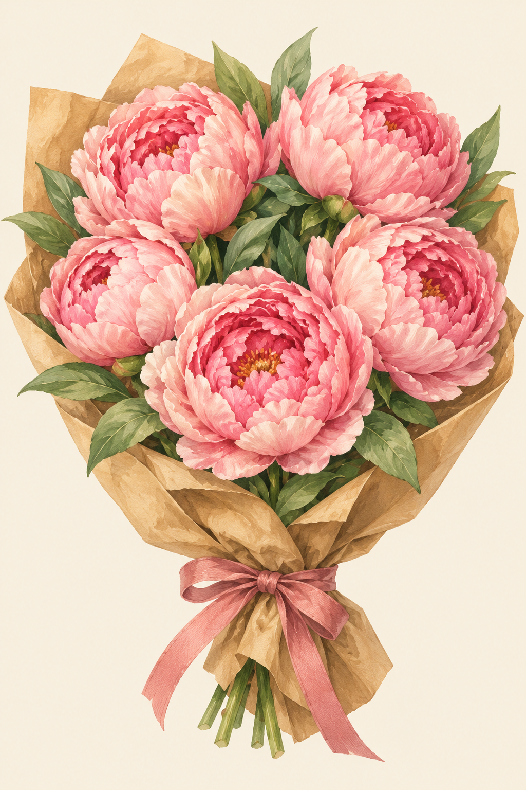

Яна,
у тебя всё получится.
Я в тебя верю.
Даже если не сразу и не с первого раза — ты справишься. Шаг за шагом, в своём темпе.
Пусть этот маленький курьер напомнит тебе об этом.
Егор.
Проводишь его?

Я в тебя верю.
Даже если не сразу и не с первого раза — ты справишься. Шаг за шагом, в своём темпе.
Пусть этот маленький курьер напомнит тебе об этом.
Егор.